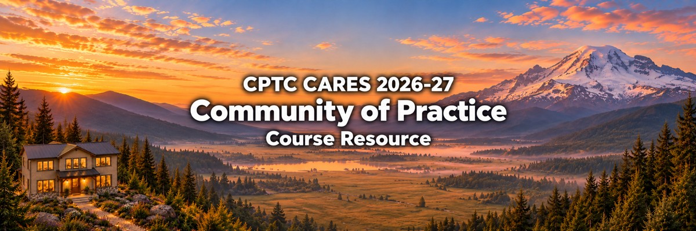

CARES Communities of Practice
Clover Park Technical College · November 2026 to May 2027

I designed these yearlong faculty communities to connect professional development with the college’s CARES goals and give faculty a structure for continuing shared work after HOME and in-service. Five communities each have two paid faculty leads, supported by a shared Canvas course and five sections.
The pathway combines HOME’s 20-hour foundation with 28 available professional development hours through community work. Faculty develop group plans, work together from November through April, and assemble evidence of their work in portfolios in May. The course and communities are active. Longer-term results will be evaluated as the work develops.
Five areas of shared work
- Community of Care: a faculty community connected to CARES’ commitment to belonging and support.
- Access: a faculty community connected to CARES’ commitment to access.
- Retention and Completion: a faculty community connected to CARES’ commitment to student progress.
- Employment: a faculty community connected to CARES’ commitment to employment.
- Sustainability: a faculty community connected to CARES’ commitment to sustainability.
My design contribution
I connected the HOME rooms and Fall 2026 planning activity with the five communities, established the lead structure and work cycle, and built the shared course and section arrangement. This page provides an overview that visitors can read without a Canvas account.